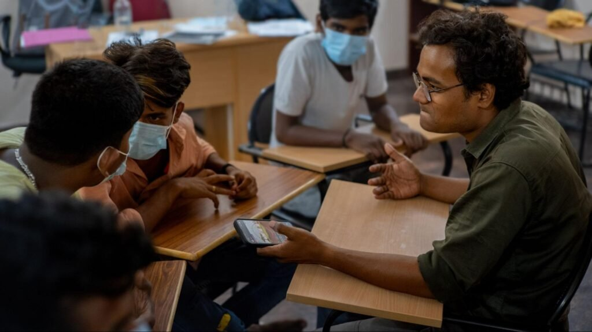
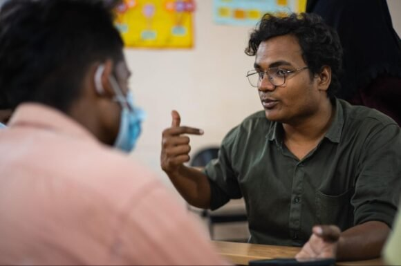

A first taste of collective action
Growing up in Wardha, a small town in Maharashtra, Mayur joined a group of residents protesting a road-widening plan that would have felled 200 trees. Their campaign saved 100 of them, and showed him what people can achieve when they act together.
From student to community leader
In 2023, while studying biology in Bengaluru, Mayur joined Restless Development's Youth Climate Action Lab as a Youth Climate Champion. After training, he surveyed his community and led workshops on waste management and deforestation.
What he did
A friend introduced Mayur to Restless Development, and he joined the Youth Climate Action Lab, a youth-led effort to respond to climate change in Bengaluru. With training from the team, he surveyed residents on the health hazards of poor waste disposal and then ran community workshops on waste, livelihoods and deforestation.
His biggest challenge was getting people to take part. He found that making the workshops welcoming to women was the key: once women felt comfortable joining, the wider community followed.
How he grew
The work changed how Mayur saw climate change. He no longer thought of it only in terms of animals and habitats, but as something that shapes people's livelihoods and food security. He said the experience helped him grow as a leader, and he planned to keep learning about sustainability and working with organisations like Restless Development.